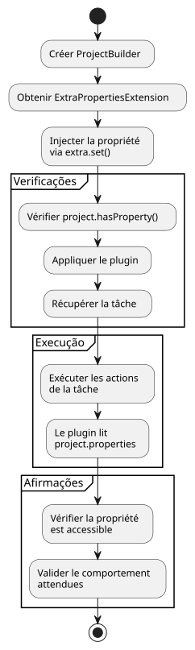
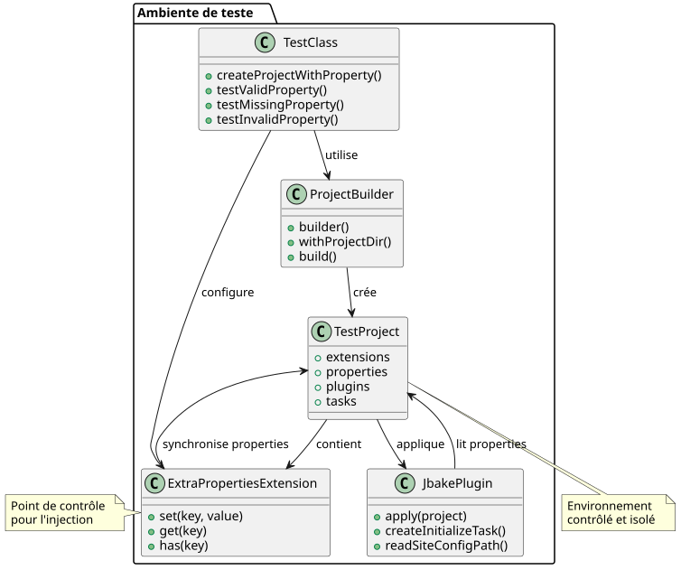

Resolver o Desafio dos Testes Unitários do Gradle com `gradle.properties
Publié le 13 July 2025
O Problema: Isolar os Testes Unitários de um Plugin Gradle
Durante a escrita de testes unitários para um plugin Gradle, um desafio comum é lidar com as dependências da configuração do projeto, como as propriedades definidas no arquivo`gradle.properties`. No nosso caso, o plugin`jbake.ghpages`devia ler uma propriedade`site_config_path`para funcionar corretamente. O teste unitário para a tarefa`initialize`Precisava verificar o comportamento do plugin na presença desta propriedade.
O problema fundamental é que os testes unitários, por design, devem ser isolados. O uso de`ProjectBuilder`de Gradle cria uma instância de`Project`na memória, totalmente desconectada de um verdadeiro projeto no sistema de arquivos. Portanto, esta instância de teste não lê automaticamente o arquivo`gradle.properties`e portanto não tem conhecimento da propriedade`site_config_path`.
Arquitetura do Problema
O diagrama a seguir ilustra a desconexão entre o ambiente de teste e o sistema de arquivos:
A Tentação de uma Falsa Boa Ideia
Uma primeira abordagem poderia ser criar um arquivo`gradle.properties`fictício nos recursos de teste.
// src/test/resources/gradle.properties
site_config_path=src/jbake/settings/site.ymlContudo, este método está destinado ao fracasso porque`ProjectBuilder`não é concebido para escanear o sistema de arquivos em busca de arquivos de configuração. O teste permaneceria isolado e ignoraria este arquivo.
A Solução: Simular a Propriedade com `ExtraPropertiesExtension
A solução elegante para este problema não é de ler o arquivo, mas de simular a presença da propriedade diretamente no objeto`Project`de teste. O Gradle fornece um mecanismo poderoso para isso: as propriedades adicionais (Extra Properties).
Passo 1: Compreender ExtraPropertiesExtension
`ExtraPropertiesExtension`é um contêiner chave-valor anexado a cada objeto do modelo Gradle. Ele permite adicionar propriedades dinamicamente a um projeto, uma tarefa ou qualquer outra extensão Gradle.

Etapa 2: Configuração do Teste - Preparação
Vamos começar criando a estrutura básica do nosso teste unitário :
class JbakeGhPagesPluginTest {
@TempDir
lateinit var testProjectDir: File
@Test
fun `check initialize and config yaml file if not existing`() {
// Étape 1 : Créer un projet de test isolé
val project = ProjectBuilder.builder()
.withProjectDir(testProjectDir)
.build()
// Suite des étapes...
}
}Passo 3: Injeção da Propriedade
Aqui está o processo detalhado para injetar a propriedade no projeto de teste :
@Test
fun `check initialize and config yaml file if not existing`() {
// Étape 1 : Créer un projet de test isolé en mémoire
val project = ProjectBuilder.builder()
.withProjectDir(testProjectDir)
.build()
// Étape 2 : Récupérer le gestionnaire de propriétés supplémentaires
val extra = project.extensions.getByType(ExtraPropertiesExtension::class.java)
// Étape 3 : Définir la propriété requise pour ce test
extra.set("site_config_path", "src/jbake/settings/site.yml")
// Étape 4 : Vérifier que la propriété est bien injectée
assertTrue(project.hasProperty("site_config_path"))
// Étape 5 : Appliquer le plugin qui pourra maintenant accéder à la propriété
project.plugins.apply("jbake.ghpages")
// Étape 6 : Exécuter la tâche et vérifier son comportement
val task: Task = project.tasks.findByName("initialize")
.apply(::assertNotNull)!!
// Étape 7 : Exécuter les actions de la tâche
task.actions.forEach { it.execute(task) }
// Étape 8 : Assertions finales
assertEquals(
"src/jbake/settings/site.yml",
project.properties["site_config_path"],
"La propriété devrait être accessible dans le projet"
)
}Passo 4 : Diagrama de Fluxo da Solução

Etapa 5 : comparação antes/depois
Etapa 6 : Gestão dos Casos de Teste Múltiplos
Para testar diferentes cenários, vamos criar vários testes com configurações variadas :
class JbakeGhPagesPluginTest {
@TempDir
lateinit var testProjectDir: File
private fun createProjectWithProperty(propertyValue: String?): Project {
val project = ProjectBuilder.builder()
.withProjectDir(testProjectDir)
.build()
// Injection conditionnelle de la propriété
propertyValue?.let { value ->
val extra = project.extensions.getByType(ExtraPropertiesExtension::class.java)
extra.set("site_config_path", value)
}
return project
}
@Test
fun `should work with valid property`() {
val project = createProjectWithProperty("src/jbake/settings/site.yml")
project.plugins.apply("jbake.ghpages")
val task = project.tasks.findByName("initialize")!!
task.actions.forEach { it.execute(task) }
// Assertions pour le cas normal
assertEquals("src/jbake/settings/site.yml", project.properties["site_config_path"])
}
@Test
fun `should handle missing property gracefully`() {
val project = createProjectWithProperty(null) // Pas de propriété
project.plugins.apply("jbake.ghpages")
val task = project.tasks.findByName("initialize")!!
// Le plugin devrait gérer l'absence de propriété
assertDoesNotThrow {
task.actions.forEach { it.execute(task) }
}
}
@Test
fun `should handle invalid property path`() {
val project = createProjectWithProperty("invalid/path/to/config.yml")
project.plugins.apply("jbake.ghpages")
val task = project.tasks.findByName("initialize")!!
// Test du comportement avec un chemin invalide
assertThrows<FileNotFoundException> {
task.actions.forEach { it.execute(task) }
}
}
}Arquitetura Final da Solução

As Vantagens desta Abordagem
-
Isolamento Completo: O teste não depende de nenhum arquivo externo. Ele é autônomo e pode ser executado de forma confiável em qualquer ambiente (local, CI/CD, etc.).
-
Clareza e Intenção: O teste declara explicitamente as pré-condições para sua execução. Quem lê o teste vê imediatamente que o plugin requer a propriedade`site_config_path`para funcionar.
-
ManutenabilidadeSe o nome da propriedade mudar, basta atualizá-lo em apenas um local no teste, sem precisar manipular os arquivos de configuração do teste.
-
FlexibilidadeTornou-se trivial testar diferentes cenários simplesmente alterando o valor da propriedade injetada em cada teste (valor válido, inválido, ausente, etc.).
-
Desempenho: Sem leitura de arquivos, tudo acontece na memória, o que deixa os testes mais rápidos.
-
ReprodutibilidadeOs testes são determinísticos porque não dependem do estado do sistema de arquivos.
Boas Práticas e Dicas
Criar um Método Utilitário
class GradleTestUtils {
companion object {
fun createProjectWithProperties(
projectDir: File,
properties: Map<String, String>
): Project {
val project = ProjectBuilder.builder()
.withProjectDir(projectDir)
.build()
val extra = project.extensions.getByType(ExtraPropertiesExtension::class.java)
properties.forEach { (key, value) ->
extra.set(key, value)
}
return project
}
}
}Validação das Propriedades
@Test
fun `should validate property injection`() {
val project = createProjectWithProperty("test-value")
// Vérifications multiples
assertTrue(project.hasProperty("site_config_path"))
assertEquals("test-value", project.property("site_config_path"))
assertNotNull(project.properties["site_config_path"])
// Vérification que la propriété est accessible par le plugin
project.plugins.apply("jbake.ghpages")
// ... reste du test
}Conclusão
Em vez de lutar para fazer ler arquivos de configuração a um ambiente de teste unitário, a melhor prática consiste em simular o estado necessário. O uso de`ExtraPropertiesExtension`Para definir programaticamente as propriedades do Gradle é o método mais limpo e mais robusto para realizar testes unitários de plugins eficazes e fiáveis.
Esta técnica transforma um problema de dependência externa em uma simples injeção de dependência, no cerne mesmo da filosofia do Desenvolvimento Orientado por Testes (TDD). Ela oferece controle total sobre o ambiente de teste, mantendo o isolamento necessário para testes unitários de qualidade.
Os diagramas e exemplos apresentados neste artigo mostram como essa abordagem pode ser implementada de forma progressiva e metódica, permitindo criar um conjunto de testes robusto e mantível para seus plugins Gradle.